Repères du catalogue
Quarante-neuf gilets pare-balles et trente-huit plaques de blindage : c'est la combinaison la plus regardée du jeu, et celle dont les chiffres sont le plus mal compris. Un gilet ne porte pas de classe ; il porte des emplacements, et c'est la plaque qui protège.
49 + 38
Gilets et plaques. Quarante-neuf gilets pare-balles et trente-huit plaques de blindage dans l'export du 18 novembre 2026.
1 – 6
Classes présentes. De la classe 2 à la classe 6 pour les gilets, de la classe 1 à la classe 6 pour les plaques.
7
Matériaux. Aramid pour l'essentiel des gilets ; céramique, acier de blindage et UHMWPE pour les plaques.
Le gilet n’a pas de classe. Les gilets pare-balles de l'export affichent une classe, mais c'est la classe de l'armure souple qu'ils embarquent : elle protège le torse et le ventre, pas les bras ni les jambes. Les plaques montées dans leurs emplacements ont leur propre classe, supérieure. Conflater les deux revient à se tromper de deux ordres de grandeur.
Le modèle de protection
Un gilet pare-balles se lit sur deux lignes : la matière de son armure souple, et les plaques qu'il accepte. La première protège ce qui n'est pas dans une poche à plaque ; la seconde protège ce qui l'est.
| Couche | Ce qu’elle mesure | Où la lire |
|---|---|---|
| Zone | La partie du corps touchée par un tir. Une pièce couvre un ensemble de zones ; le jeu calcule zone par zone. | Colonne Zones du catalogue |
| Classe | La capacité d'une matière à arrêter une munition, de 1 à 6. Elle appartient à la plaque ou à l'armure souple. | Colonne Classe du catalogue |
| Durabilité | La résistance totale de la pièce avant qu'elle ne cède. Chaque impact en retire une part liée au matériau. | Colonne Durabilité du catalogue |
| Mobilité | Le poids et les pénalités de vitesse, de rotation et d'ergonomie, qui s'ajoutent aux vôtres. | Colonnes Poids et Prix de base du catalogue |
La règle de pénétration appliquée par le jeu depuis le correctif 0.14.6.0 du 25 avril 2024 est détaillée sur la page balistique.
Les huit matériaux
La matière détermine la destructibilité, c’est-à-dire la part de sa résistance qui part à chaque impact, et l’usure appliquée lors d’une réparation. Les deux valeurs viennent de l’export : elles sont identiques pour toutes les pièces d’un même matériau.
| Matériau | Destructibilité | Usure (réparation) | Usure (kit de réparation) |
|---|---|---|---|
| Aramid | 0.1875 | 3 % – 7 % | 2 % – 6 % |
| UHMWPE | 0.3375 | 1 % – 3 % | 0 % – 2 % |
| Matériau combiné | 0.375 | 10 % – 15 % | 9 % – 14 % |
| Titane | 0.4125 | 6 % – 10 % | 6 % – 9 % |
| Aluminium | 0.45 | 6 % – 10 % | 6 % – 9 % |
| Acier de blindage | 0.525 | 1 % – 3 % | 0 % – 2 % |
| Céramique | 0.6 | 17 % – 22 % | 16 % – 20 % |
| Verre | 0.6 | 23 % – 42 % | 21 % – 38 % |
La colonne Réparation donne la perte de résistance entre la version neuve et la version réparée. Un matériau peu destructible mais très usé se répare mal : c’est le compromis du titane et de l’aluminium.
Les six classes
La classe va de 1 à 6. Elle décrit la matière, pas la pièce entière : une plaque de classe 6 montée dans un gilet de classe 2 protège autant que la plaque, pour les zones que la plaque couvre.
| Classe | Pièces | Durabilité | Matériaux dominants |
|---|---|---|---|
| Classe 1 | 1 | 90 – 90 | UHMWPE |
| Classe 2 | 6 | 68 – 128 | Aramid |
| Classe 3 | 12 | 35 – 240 | Acier de blindage, Aramid, Matériau combiné |
| Classe 4 | 18 | 40 – 246 | Aramid, Acier de blindage, UHMWPE |
| Classe 5 | 28 | 15 – 398 | Aramid, Acier de blindage, Céramique |
| Classe 6 | 22 | 18 – 510 | Céramique, Aramid, UHMWPE |
| Sans classe | 0 | — |
Les pièces sans classe ne sont pas des pièces sans blindage : ce sont les accessoires dont la catégorie n’implique pas de protection chiffrée, comme une visière ou une protection auditive.
Les gilets et les plaques
Les quarante-neuf gilets pare-balles de l'export, avec leurs emplacements de plaque et le nombre de plaques autorisées pour chacun. Le filtre porte sur la classe, le matériau et le nombre d'emplacements.
| Image | Pièce | Classe | Matériau | Durabilité | Zones | Poids (kg) | Emplacements à plaques | Prix de base (₽) |
|---|---|---|---|---|---|---|---|---|
 | Gilet pare-balles 6B43 6A Zabralo-Sh (Digital Flora)Gilet pare-balles | 6 | Aramid | 510 | 15 | 10,80 kg | 4 / 12 | 113 046 ₽ |
 | Gilet pare-balles souple PACAGilet pare-balles | 2 | Aramid | 100 | 6 | 3,50 kg | 0 / 4 | 26 263 ₽ |
 | Gilet pare-balles BNTI Module-3MGilet pare-balles | 2 | Aramid | 80 | 6 | 6 kg | 0 / 4 | 21 453 ₽ |
 | Gilet pare-balles MF-UNTARGilet pare-balles | 3 | Aluminium | 100 | 6 | 8,50 kg | 0 / 4 | 26 225 ₽ |
 | Gilet pare-balles BNTI Gzhel-KGilet pare-balles | 5 | Aramid | 259 | 12 | 2,95 kg | 4 / 9 | 78 098 ₽ |
 | Gilet pare-balles IOTV Gen4 (protection intégrale, MultiCam)Gilet pare-balles | 5 | Aramid | 398 | 16 | 9,08 kg | 4 / 13 | 100 483 ₽ |
 | Gilet pare-balles IOTV Gen4 (kit assaut, MultiCam)Gilet pare-balles | 5 | Aramid | 362 | 14 | 8,18 kg | 4 / 11 | 86 681 ₽ |
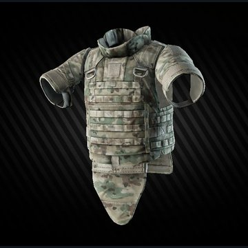 | Gilet pare-balles IOTV Gen4 (kit haute mobilité, MultiCam)Gilet pare-balles | 5 | Aramid | 320 | 14 | 7,88 kg | 4 / 11 | 83 289 ₽ |
 | Gilet pare-balles BNTI Kirasa-NGilet pare-balles | 3 | Matériau combiné | 240 | 10 | 3 kg | 2 / 7 | 20 740 ₽ |
 | Gilet d'assaut pare-balles 6B13 (Flora)Gilet pare-balles | 4 | Aramid | 203 | 11 | 2,80 kg | 2 / 8 | 30 655 ₽ |
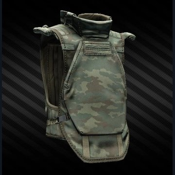 | Gilet d'assaut pare-balles 6B13 (Digital Flora)Gilet pare-balles | 4 | Aramid | 203 | 11 | 2,80 kg | 2 / 8 | 30 655 ₽ |
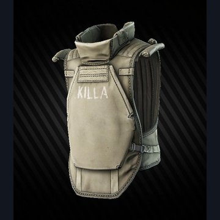 | Gilet d'assaut pare-balles 6B13 M (édition Killa)Gilet pare-balles | 5 | Aramid | 249 | 11 | 2,80 kg | 2 / 8 | 148 542 ₽ |
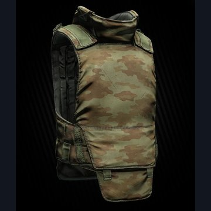 | Gilet pare-balles 6B23-2 (Mountain Flora)Gilet pare-balles | 4 | Aramid | 246 | 12 | 3,30 kg | 2 / 9 | 34 794 ₽ |
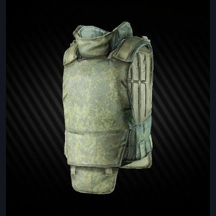 | Gilet pare-balles 6B23-1 (Digital Flora)Gilet pare-balles | 3 | Aramid | 206 | 12 | 3,30 kg | 2 / 9 | 25 077 ₽ |
 | Gilet pare-balles BNTI Zhuk (presse)Gilet pare-balles | 3 | Aramid | 185 | 14 | 2,37 kg | 4 / 9 | 16 319 ₽ |
 | Gilet pare-balles BNTI Zhuk (EMR)Gilet pare-balles | 6 | Aramid | 305 | 12 | 2,97 kg | 4 / 9 | 94 152 ₽ |
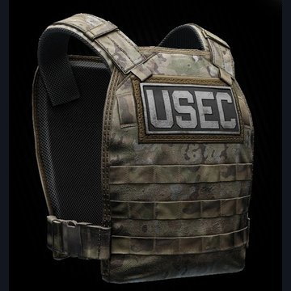 | Gilet pare-balles HighCom Trooper TFO (MultiCam)Gilet pare-balles | 4 | Aramid | 180 | 6 | 4,10 kg | 2 / 4 | 55 760 ₽ |
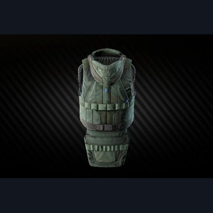 | Gilet pare-balles FORT Redut-MGilet pare-balles | 5 | Aramid | 358 | 14 | 7,70 kg | 4 / 11 | 74 907 ₽ |
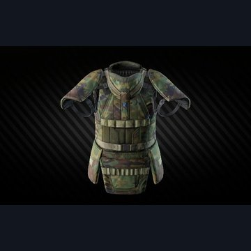 | Gilet pare-balles FORT Redut-T5 (Smog)Gilet pare-balles | 6 | Aramid | 504 | 16 | 8,10 kg | 4 / 13 | 106 865 ₽ |
 | Gilet pare-balles 6B2 (flora)Gilet pare-balles | 2 | Aramid | 128 | 4 | 5,40 kg | 0 / 2 | 17 942 ₽ |
 | Gilet porte-plaques LBT-6094A Slick (noir)Gilet pare-balles | 6 | Aramid | 200 | 4 | 1,30 kg | 2 / 4 | 64 200 ₽ |
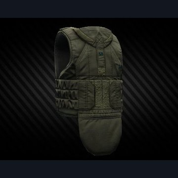 | Gilet pare-balles FORT Defender-2Gilet pare-balles | 5 | Acier de blindage | 320 | 10 | 5,70 kg | 2 / 8 | 80 609 ₽ |
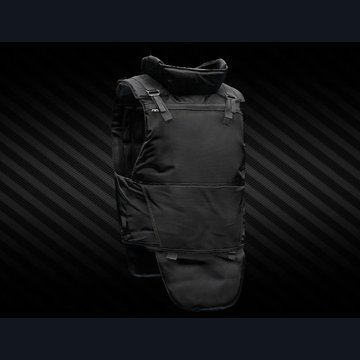 | Gilet pare-balles NPP KlASS Korund-VM (noir)Gilet pare-balles | 5 | Aramid | 310 | 14 | 1,90 kg | 4 / 11 | 48 428 ₽ |
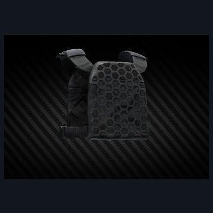 | Gilet porte-plaques 5.11 Tactical HexgridGilet pare-balles | 6 | UHMWPE | 100 | 2 | 1,02 kg | 2 / 2 | 25 996 ₽ |
 | Gilet porte-plaques LBT-6094A Slick (Coyote Tan)Gilet pare-balles | 6 | Aramid | 200 | 4 | 1,30 kg | 2 / 4 | 64 200 ₽ |
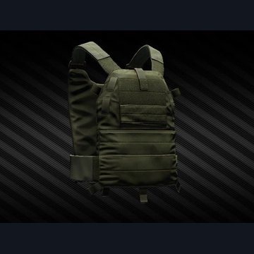 | Gilet porte-plaques LBT-6094A Slick (Olive Drab)Gilet pare-balles | 6 | Aramid | 200 | 4 | 1,30 kg | 2 / 4 | 64 200 ₽ |
 | Gilet pare-balles souple PACA (édition Rivals)Gilet pare-balles | 2 | Aramid | 100 | 6 | 3,50 kg | 0 / 4 | 52 839 ₽ |
 | Gilet pare-balles NFM THOR Concealable Reinforced VestGilet pare-balles | 4 | UHMWPE | 170 | 10 | 1,70 kg | 4 / 8 | 38 097 ₽ |
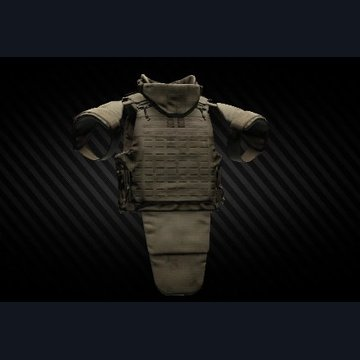 | Gilet pare-balles NFM THOR Integrated CarrierGilet pare-balles | 6 | UHMWPE | 466 | 15 | 8,50 kg | 4 / 12 | 129 502 ₽ |
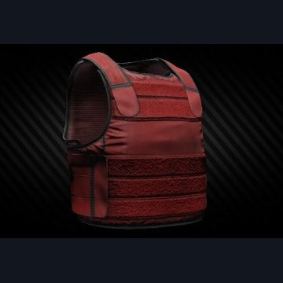 | Gilet pare-balles DRDGilet pare-balles | 3 | Aramid | 120 | 6 | 4 kg | 0 / 4 | 55 802 ₽ |
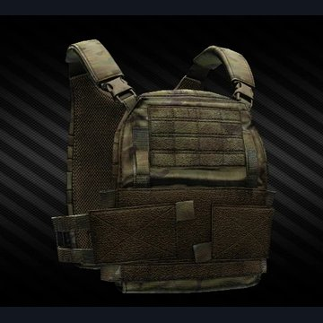 | Gilet porte-plaques Hexatac HPC (MultiCam noir)Gilet pare-balles | 5 | Aramid | 90 | 2 | 0,47 kg | 2 / 2 | 31 398 ₽ |
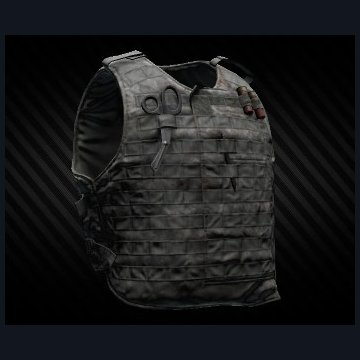 | Gilet pare-balles Interceptor OTV (UCP)Gilet pare-balles | 4 | Aramid | 222 | 8 | 3,80 kg | 2 / 6 | 40 491 ₽ |
 | Plaque balistique Granit Br5Plaque de blindage | 6 | Céramique | 60 | 2 | 3,30 kg | 0 / 0 | 61 955 ₽ |
 | Plaque balistique Granit (flanc)Plaque de blindage | 6 | Céramique | 20 | 4 | 1,30 kg | 0 / 0 | 14 521 ₽ |
 | Plaque balistique ESBI niveau IV (flanc)Plaque de blindage | 6 | Céramique | 18 | 4 | 1,15 kg | 0 / 0 | 16 120 ₽ |
 | Plaque balistique ESAPI niveau IVPlaque de blindage | 6 | Céramique | 55 | 2 | 3,20 kg | 0 / 0 | 72 426 ₽ |
 | Gilet pare-balles NPP KlASS Kora-Kulon (noir)Gilet pare-balles | 3 | Acier de blindage | 128 | 4 | 11,10 kg | 0 / 2 | 33 242 ₽ |
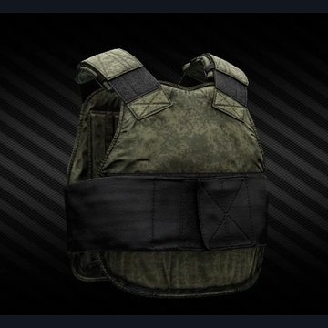 | Gilet pare-balles NPP KlASS Kora-Kulon (Digital Flora)Gilet pare-balles | 3 | Acier de blindage | 128 | 4 | 11,10 kg | 0 / 2 | 33 242 ₽ |
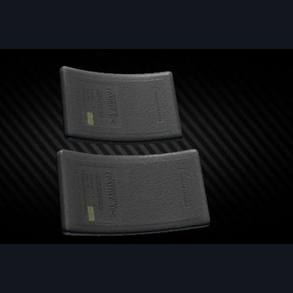 | Plaque balistique Granit 4RS (arrière)Plaque de blindage | 6 | Céramique | 50 | 1 | 3,80 kg | 0 / 0 | 49 626 ₽ |
 | Plaques balistiques 6B12 (avant)Plaque de blindage | 3 | Acier de blindage | 50 | 1 | 4,60 kg | 0 / 0 | 12 418 ₽ |
 | Plaque balistique Korund-VM (flanc)Plaque de blindage | 5 | Acier de blindage | 25 | 4 | 1,10 kg | 0 / 0 | 7 627 ₽ |
 | Plaque balistique Granit Br4Plaque de blindage | 5 | Céramique | 55 | 2 | 2,90 kg | 0 / 0 | 39 146 ₽ |
 | Plaque balistique SSAPI niveau III+ (flanc)Plaque de blindage | 5 | Céramique | 15 | 4 | 1 kg | 0 / 0 | 8 804 ₽ |
 | Plaque balistique SAPI niveau III+Plaque de blindage | 5 | Céramique | 50 | 2 | 1,82 kg | 0 / 0 | 37 084 ₽ |
 | Plaques balistiques Granit 4 (arrière)Plaque de blindage | 5 | Céramique | 45 | 1 | 3,30 kg | 0 / 0 | 32 703 ₽ |
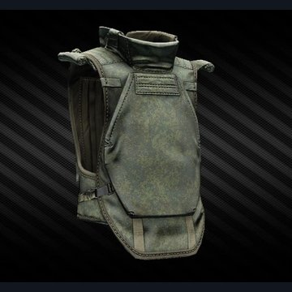 | Plaques balistiques 6B13 modifiées (arrière)Plaque de blindage | 4 | Acier de blindage | 45 | 1 | 4,10 kg | 0 / 0 | 12 038 ₽ |
 | Plaque balistique Zhuk-3 (avant)Plaque de blindage | 3 | UHMWPE | 40 | 1 | 2,40 kg | 0 / 0 | 10 185 ₽ |
 | Plaque balistique 6B33 (avant)Plaque de blindage | 4 | Acier de blindage | 50 | 1 | 3,70 kg | 0 / 0 | 15 207 ₽ |
 | Plaque balistique Granit 4 (avant)Plaque de blindage | 5 | Céramique | 50 | 1 | 3,05 kg | 0 / 0 | 34 756 ₽ |
 | Plaque balistique Granit 4RS (avant)Plaque de blindage | 6 | Céramique | 55 | 1 | 3,50 kg | 0 / 0 | 51 402 ₽ |
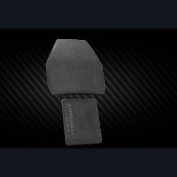 | Plaques balistiques Korund-VM (avant)Plaque de blindage | 5 | Acier de blindage | 60 | 1 | 3,40 kg | 0 / 0 | 32 780 ₽ |
 | Plaques balistiques Korund VM-K (avant)Plaque de blindage | 6 | Céramique | 60 | 1 | 4 kg | 0 / 0 | 53 531 ₽ |
 | Plaque balistique AR500 Legacy PlatePlaque de blindage | 3 | Matériau combiné | 45 | 2 | 3,85 kg | 0 / 0 | 12 580 ₽ |
 | Plaque balistique SPRTN OmegaPlaque de blindage | 4 | Matériau combiné | 50 | 2 | 4,39 kg | 0 / 0 | 18 241 ₽ |
 | Plaque balistique Global Armor's acierPlaque de blindage | 4 | Acier de blindage | 45 | 2 | 3,40 kg | 0 / 0 | 16 079 ₽ |
 | Plaque balistique Kiba Arms titanePlaque de blindage | 4 | Titane | 55 | 2 | 2,25 kg | 0 / 0 | 21 620 ₽ |
 | Plaque balistique TallCom GuardianPlaque de blindage | 5 | Matériau combiné | 55 | 2 | 3,50 kg | 0 / 0 | 36 807 ₽ |
 | Plaque balistique NESCO 4400-SA-MCPlaque de blindage | 6 | Matériau combiné | 60 | 2 | 3,60 kg | 0 / 0 | 68 217 ₽ |
 | Plaque balistique Kiba Arms acierPlaque de blindage | 6 | Acier de blindage | 50 | 2 | 5,10 kg | 0 / 0 | 52 900 ₽ |
 | Plaque balistique Cult LocustPlaque de blindage | 5 | Titane | 60 | 2 | 2,56 kg | 0 / 0 | 40 355 ₽ |
 | Plaque balistique Cult TermitePlaque de blindage | 6 | Titane | 65 | 2 | 3,85 kg | 0 / 0 | 77 018 ₽ |
 | Plaque balistique légère PRTCTRPlaque de blindage | 3 | UHMWPE | 35 | 2 | 0,43 kg | 0 / 0 | 13 018 ₽ |
 | Plaque balistique Monoclete niveau III PEPlaque de blindage | 4 | UHMWPE | 40 | 2 | 1,35 kg | 0 / 0 | 18 620 ₽ |
 | Plaque balistique GAC 3s15mPlaque de blindage | 5 | UHMWPE | 45 | 2 | 0,97 kg | 0 / 0 | 53 801 ₽ |
 | Plaque balistique GAC 4sss2Plaque de blindage | 6 | UHMWPE | 50 | 2 | 2,70 kg | 0 / 0 | 85 002 ₽ |
 | Plaque balistique KITECO SC-IV SAPlaque de blindage | 6 | UHMWPE | 45 | 2 | 2,45 kg | 0 / 0 | 69 705 ₽ |
 | Plaque balistique SPRTN ElaphrosPlaque de blindage | 4 | Céramique | 45 | 2 | 1,60 kg | 0 / 0 | 17 254 ₽ |
 | Plaque balistique NewSphereTech niveau IIIPlaque de blindage | 4 | Aluminium | 45 | 2 | 2,15 kg | 0 / 0 | 16 842 ₽ |
 | Plaque balistique 6B23-2 (arrière)Plaque de blindage | 4 | Acier de blindage | 40 | 1 | 3,50 kg | 0 / 0 | 11 201 ₽ |
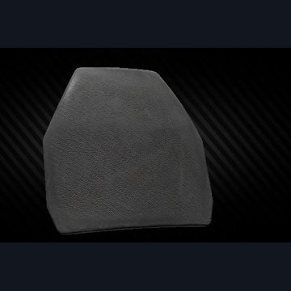 | Plaque balistique Korund-VM (arrière)Plaque de blindage | 5 | Acier de blindage | 40 | 1 | 2,30 kg | 0 / 0 | 26 538 ₽ |
 | Plaque balistique Korund-VM-K (arrière)Plaque de blindage | 6 | Céramique | 45 | 1 | 2,70 kg | 0 / 0 | 42 641 ₽ |
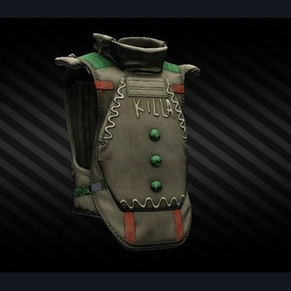 | Gilet d'assaut pare-balles 6B13 M (édition de Noël)Gilet pare-balles | 5 | Aramid | 249 | 11 | 2,80 kg | 2 / 8 | 198 542 ₽ |
 | Gilet porte-plaques Hexatac HPC (MultiCam)Gilet pare-balles | 5 | Aramid | 90 | 2 | 0,47 kg | 2 / 2 | 31 398 ₽ |
 | Gilet pare-balles BNTI Kirasa-N (vert)Gilet pare-balles | 3 | Matériau combiné | 240 | 10 | 3 kg | 2 / 7 | 24 972 ₽ |
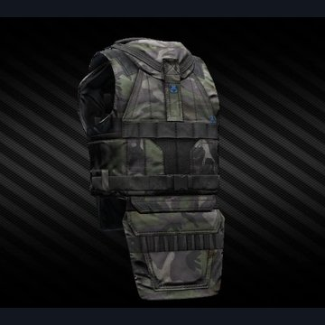 | Gilet pare-balles FORT Redut-M (SK Woodland)Gilet pare-balles | 5 | Aramid | 358 | 14 | 7,70 kg | 4 / 11 | 74 907 ₽ |
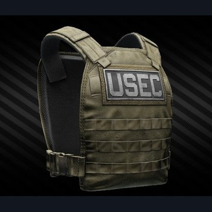 | Gilet pare-balles HighCom Trooper TFO (Coyote)Gilet pare-balles | 4 | Aramid | 180 | 6 | 4,10 kg | 2 / 4 | 55 760 ₽ |
 | 6B45 body armor (EMR)Gilet pare-balles | 6 | Aramid | 374 | 12 | 3,65 kg | 4 / 9 | 76 708 ₽ |
 | NFM THOR Concealable Reinforced Vest body armor (Head Eyes)Gilet pare-balles | 4 | UHMWPE | 170 | 10 | 1,70 kg | 4 / 8 | 38 097 ₽ |
 | Interceptor OTV body armor (Woodland)Gilet pare-balles | 4 | Aramid | 222 | 8 | 3,80 kg | 2 / 6 | 40 491 ₽ |
 | NPP KlASS Korund-VM body armor (Kamysh)Gilet pare-balles | 5 | Aramid | 310 | 14 | 1,90 kg | 4 / 11 | 48 428 ₽ |
 | Plaque balistique Tac-Kek SAPI niveau III+ (réplique)Plaque de blindage | 1 | UHMWPE | 90 | 2 | 1,10 kg | 0 / 0 | 4 350 ₽ |
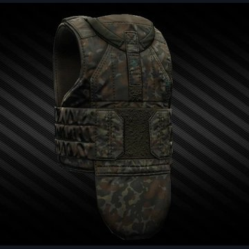 | Gilet pare-balles FORT Defender-2 (Flecktarn)Gilet pare-balles | 5 | Acier de blindage | 320 | 10 | 5,70 kg | 2 / 8 | 80 609 ₽ |
 | FORT Redut-M body armor (Prisoner of the Arena)Gilet pare-balles | 5 | Aramid | 358 | 14 | 7,70 kg | 4 / 11 | 76 907 ₽ |
 | FORT Redut-M body armor (Black)Gilet pare-balles | 5 | Aramid | 358 | 14 | 7,70 kg | 4 / 11 | 76 907 ₽ |
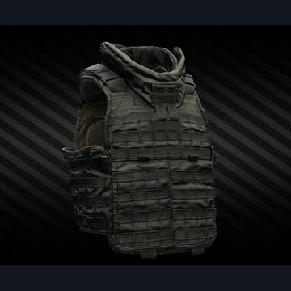 | FORT Gladiator-S plate carrier (Gray)Gilet pare-balles | 5 | Aramid | 345 | 12 | 3,31 kg | 4 / 9 | 69 325 ₽ |
 | Blue Force Gear PLATEminus V2 body armor (Coyote Brown)Gilet pare-balles | 2 | Aramid | 68 | 8 | 1,37 kg | 4 / 8 | 38 703 ₽ |
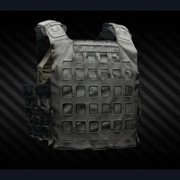 | Blue Force Gear PLATEminus V2 body armor (Wolf Gray)Gilet pare-balles | 2 | Aramid | 68 | 8 | 1,37 kg | 4 / 8 | 38 703 ₽ |
La colonne <em>Emplacements à plaques</em> donne le rapport entre les emplacements qui acceptent une plaque et le nombre total d'emplacements de la pièce.
Emplacements et plaques
Chaque gilet déclare ses emplacements et la liste des plaques autorisées pour chacun. C'est la compatibilité déclarée par l'export, celle que le client vérifie à l'équipement.
| Emplacement | Pièces | Plaques autorisées | Classe maximale |
|---|---|---|---|
| Plaque arrière | 39 | 27 | 6 – 6 |
| Plaque avant | 39 | 28 | 6 – 6 |
| Plaque latérale droite | 21 | 4 | 5 – 6 |
| Plaque latérale gauche | 21 | 4 | 5 – 6 |
| back_plate | 2 | 22 | 6 – 6 |
| front_plate | 2 | 23 | 6 – 6 |
| Plaque | Classe | Matériau | Durabilité | Zones | Poids (kg) | Ricochet (z) | Prix de base (₽) |
|---|---|---|---|---|---|---|---|
| Plaque balistique Cult Termite | 6 | Titane | 65 | 2 | 3,85 kg | 80 % | 77 018 ₽ |
| Plaque balistique ESAPI niveau IV | 6 | Céramique | 55 | 2 | 3,20 kg | 80 % | 72 426 ₽ |
| Plaque balistique ESBI niveau IV (flanc) | 6 | Céramique | 18 | 4 | 1,15 kg | 80 % | 16 120 ₽ |
| Plaque balistique GAC 4sss2 | 6 | UHMWPE | 50 | 2 | 2,70 kg | 80 % | 85 002 ₽ |
| Plaque balistique Granit (flanc) | 6 | Céramique | 20 | 4 | 1,30 kg | 80 % | 14 521 ₽ |
| Plaque balistique Granit 4RS (arrière) | 6 | Céramique | 50 | 1 | 3,80 kg | 80 % | 49 626 ₽ |
| Plaque balistique Granit 4RS (avant) | 6 | Céramique | 55 | 1 | 3,50 kg | 80 % | 51 402 ₽ |
| Plaque balistique Granit Br5 | 6 | Céramique | 60 | 2 | 3,30 kg | 80 % | 61 955 ₽ |
| Plaque balistique KITECO SC-IV SA | 6 | UHMWPE | 45 | 2 | 2,45 kg | 80 % | 69 705 ₽ |
| Plaque balistique Kiba Arms acier | 6 | Acier de blindage | 50 | 2 | 5,10 kg | 80 % | 52 900 ₽ |
| Plaque balistique Korund-VM-K (arrière) | 6 | Céramique | 45 | 1 | 2,70 kg | 80 % | 42 641 ₽ |
| Plaque balistique NESCO 4400-SA-MC | 6 | Matériau combiné | 60 | 2 | 3,60 kg | 80 % | 68 217 ₽ |
| Plaques balistiques Korund VM-K (avant) | 6 | Céramique | 60 | 1 | 4 kg | 80 % | 53 531 ₽ |
| Plaque balistique Cult Locust | 5 | Titane | 60 | 2 | 2,56 kg | 80 % | 40 355 ₽ |
| Plaque balistique GAC 3s15m | 5 | UHMWPE | 45 | 2 | 0,97 kg | 80 % | 53 801 ₽ |
| Plaque balistique Granit 4 (avant) | 5 | Céramique | 50 | 1 | 3,05 kg | 80 % | 34 756 ₽ |
| Plaque balistique Granit Br4 | 5 | Céramique | 55 | 2 | 2,90 kg | 80 % | 39 146 ₽ |
| Plaque balistique Korund-VM (arrière) | 5 | Acier de blindage | 40 | 1 | 2,30 kg | 80 % | 26 538 ₽ |
| Plaque balistique Korund-VM (flanc) | 5 | Acier de blindage | 25 | 4 | 1,10 kg | 80 % | 7 627 ₽ |
| Plaque balistique SAPI niveau III+ | 5 | Céramique | 50 | 2 | 1,82 kg | 80 % | 37 084 ₽ |
| Plaque balistique SSAPI niveau III+ (flanc) | 5 | Céramique | 15 | 4 | 1 kg | 80 % | 8 804 ₽ |
| Plaque balistique TallCom Guardian | 5 | Matériau combiné | 55 | 2 | 3,50 kg | 80 % | 36 807 ₽ |
| Plaques balistiques Granit 4 (arrière) | 5 | Céramique | 45 | 1 | 3,30 kg | 80 % | 32 703 ₽ |
| Plaques balistiques Korund-VM (avant) | 5 | Acier de blindage | 60 | 1 | 3,40 kg | 80 % | 32 780 ₽ |
| Plaque balistique 6B23-2 (arrière) | 4 | Acier de blindage | 40 | 1 | 3,50 kg | 80 % | 11 201 ₽ |
| Plaque balistique 6B33 (avant) | 4 | Acier de blindage | 50 | 1 | 3,70 kg | 80 % | 15 207 ₽ |
| Plaque balistique Global Armor's acier | 4 | Acier de blindage | 45 | 2 | 3,40 kg | 80 % | 16 079 ₽ |
| Plaque balistique Kiba Arms titane | 4 | Titane | 55 | 2 | 2,25 kg | 80 % | 21 620 ₽ |
| Plaque balistique Monoclete niveau III PE | 4 | UHMWPE | 40 | 2 | 1,35 kg | 80 % | 18 620 ₽ |
| Plaque balistique NewSphereTech niveau III | 4 | Aluminium | 45 | 2 | 2,15 kg | 80 % | 16 842 ₽ |
| Plaque balistique SPRTN Elaphros | 4 | Céramique | 45 | 2 | 1,60 kg | 80 % | 17 254 ₽ |
| Plaque balistique SPRTN Omega | 4 | Matériau combiné | 50 | 2 | 4,39 kg | 80 % | 18 241 ₽ |
| Plaques balistiques 6B13 modifiées (arrière) | 4 | Acier de blindage | 45 | 1 | 4,10 kg | 80 % | 12 038 ₽ |
| Plaque balistique AR500 Legacy Plate | 3 | Matériau combiné | 45 | 2 | 3,85 kg | 80 % | 12 580 ₽ |
| Plaque balistique Zhuk-3 (avant) | 3 | UHMWPE | 40 | 1 | 2,40 kg | 80 % | 10 185 ₽ |
| Plaque balistique légère PRTCTR | 3 | UHMWPE | 35 | 2 | 0,43 kg | 80 % | 13 018 ₽ |
| Plaques balistiques 6B12 (avant) | 3 | Acier de blindage | 50 | 1 | 4,60 kg | 80 % | 12 418 ₽ |
| Plaque balistique Tac-Kek SAPI niveau III+ (réplique) | 1 | UHMWPE | 90 | 2 | 1,10 kg | 80 % | 4 350 ₽ |
Une plaque autorisée n'est pas une plaque compatible partout : la taille de la poche et la géométrie de l'emplacement interviennent aussi.
Comment s’équiper
Quatre repères pour arbitrer entre deux gilets, à partir des chiffres du catalogue plutôt que des habitudes de forum.
- Choisir la plaque avant le gilet. La plaque décide de la classe et de la durabilité. Le gilet décide des zones et du nombre d'emplacements. Un gilet à deux emplacements bien placés vaut mieux qu'un gilet à quatre emplacements mal placés.
- Vérifier les zones de l’armure souple. Le gilet protège le torse, le ventre et le bas-ventre par son armure souple. Les bras, les jambes et la tête ne sont couverts que par les plaques et les autres pièces de l'ensemble.
- Compter le poids cumulé. Un gilet de onze kilos, un casque lourd et quatre plaques font un ensemble où la mobilité disparaît. Les pénalités de vitesse, de rotation et d'ergonomie de la fiche s'ajoutent aux vôtres.
- Réparer, c’est perdre de la durée de vie. La réparation restitue de la résistance mais retire un pourcentage de la durée de vie de la pièce. Sur l'aramid, l'usure est faible ; sur l'acier de blindage, elle l'est aussi ; sur la céramique, elle est forte.
Sur la compatibilité réelle. L'export liste les objets autorisés par emplacement, mais la validation finale reste celle du client : deux plaques autorisées dans la même fiche peuvent être refusées à l'équipement selon la configuration. Le guide publie la donnée, pas une garantie de pose.
Sources et limites
Les caractéristiques proviennent de l’export communautaire du 18 novembre 2026, identique dans les trois profils de jeu. Les règles de zone, de classe et de pénétration relèvent des notes de l’éditeur pour les correctifs 0.14.x. Les classements de plaques et les avis d’équipement sont signalés comme opinions et ne servent jamais de source chiffrée.
- Tarkov.dev — items, équipement, munitions et skills (PvP ; autres modes via le catalogue)Données communautaires
- Tarkov.dev — catalogue officiel des exports JSONDonnées communautaires
- Ballistics — mécanique en jeuWiki communautaire
- Escape from Tarkov WikiWiki communautaire
- Armor, plates and materials — classes, zones et réparationAnalyse communautaire
- IGN — guide d’armure et zones couvertesAvis communautaire
- Reddit — question sur les gilets pare-ballesAvis communautaire
- Reddit — discussion sur les matériaux et plaques d’armureAvis communautaire
- Patch 0.14.0.0 — plaques balistiques, zones d'armure et classes (27 décembre 2023)Éditeur
- Patch 0.14.6.0 — refonte de la pénétration (25 avril 2024)Éditeur
- Patch 0.15.0.0 — classes 5 et 6 retirées du marché (20 août 2024)Éditeur
- Tarkov.dev — classes d’armure, zones et matériauxDonnées communautaires
- Équipement — classes d’armure, zones et ricochetsWiki communautaire
- Porte-plaques Crye Precision AVS — fiche détailléeWiki communautaire